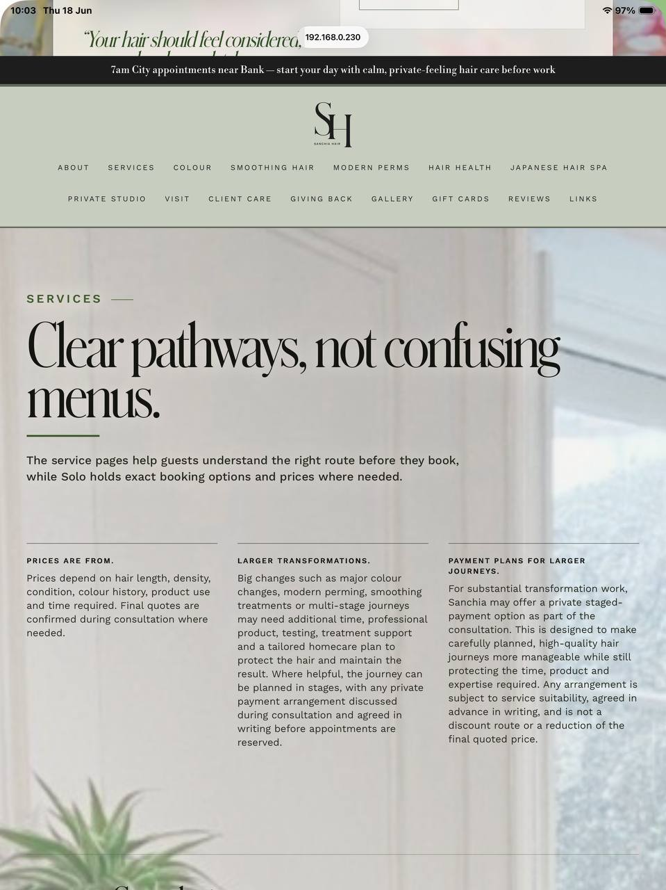
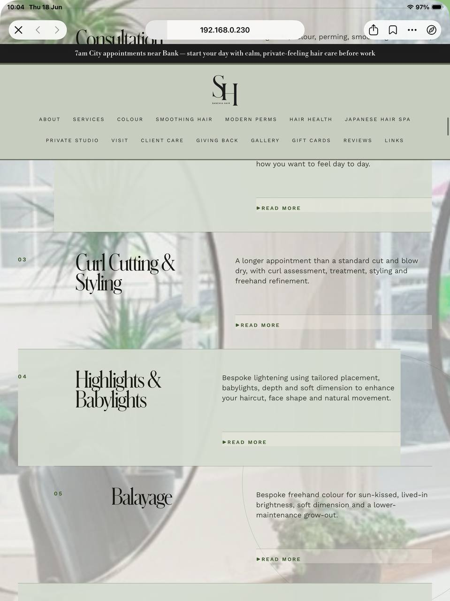
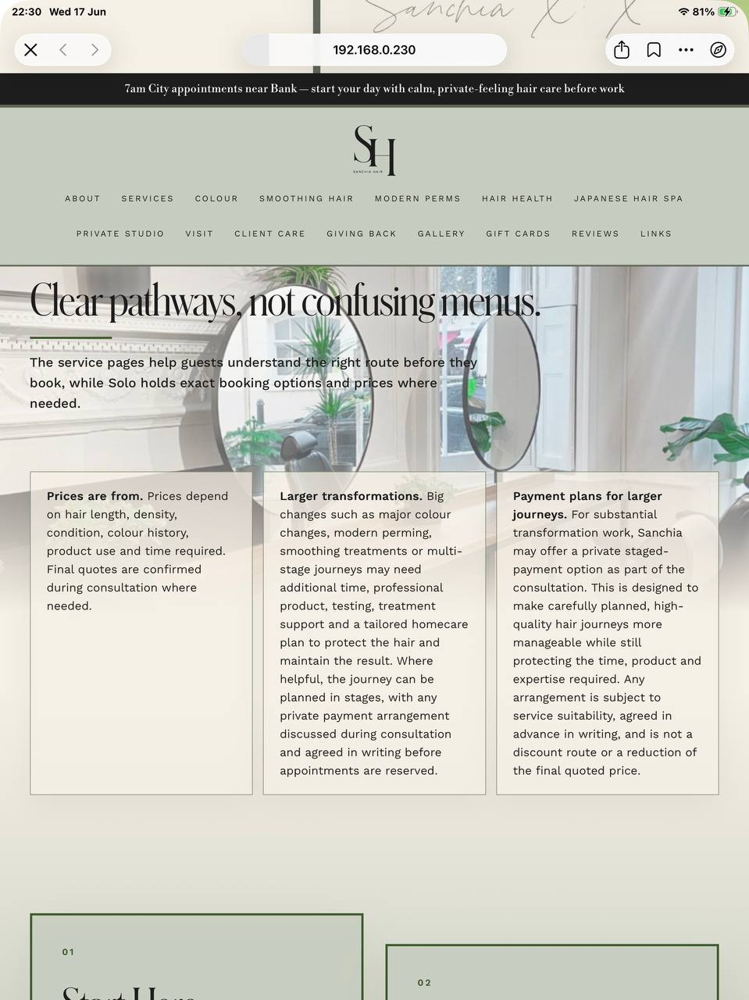

Exact earlier Services reference
Services version we discussed earlier
This page shows the exact earlier Services screenshot set with the box-heavy layout and the full-width image-led sections that you said was the wrong direction.
Why this one: it matches the version with the big grid of service boxes and the pale editorial background.

img_3ddaf3b712e0

img_6db77409e25a

img_7c1d46215845
img_2ef2c7a7604c